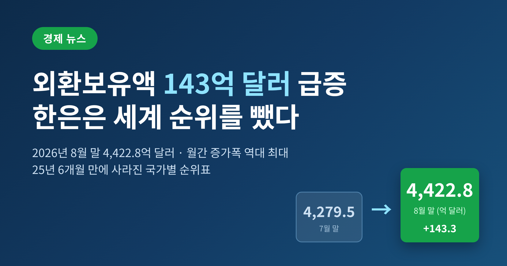
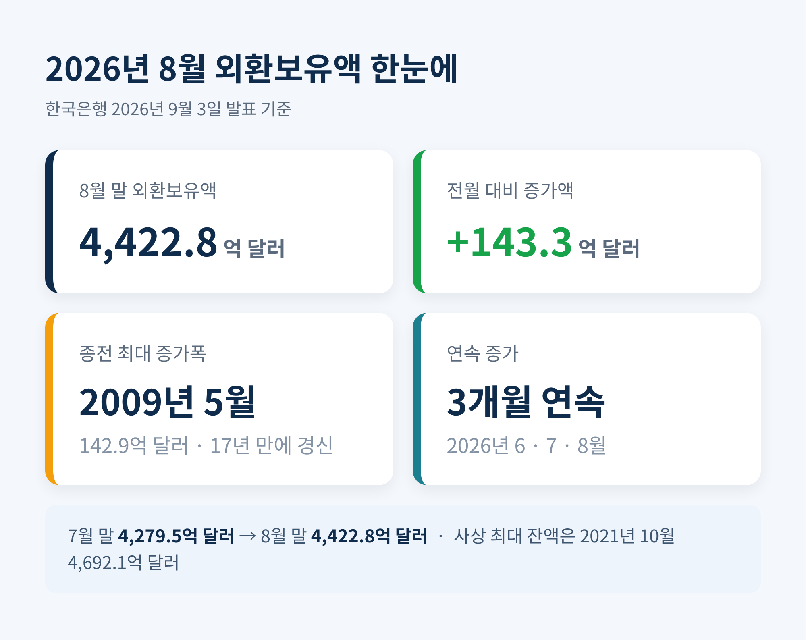
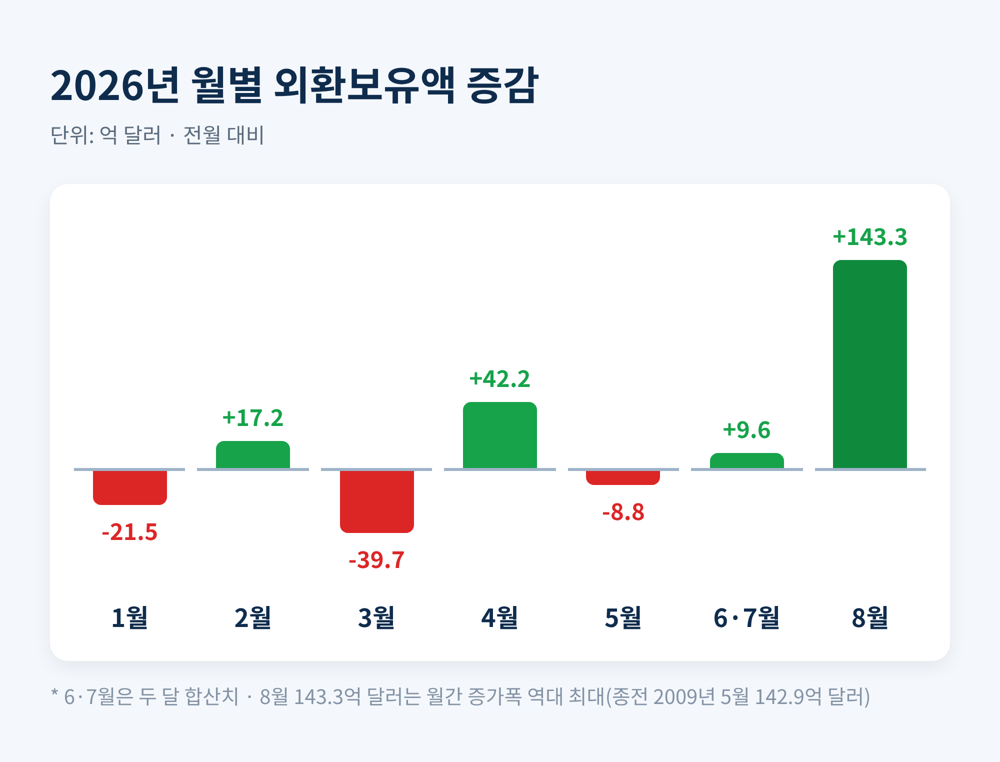
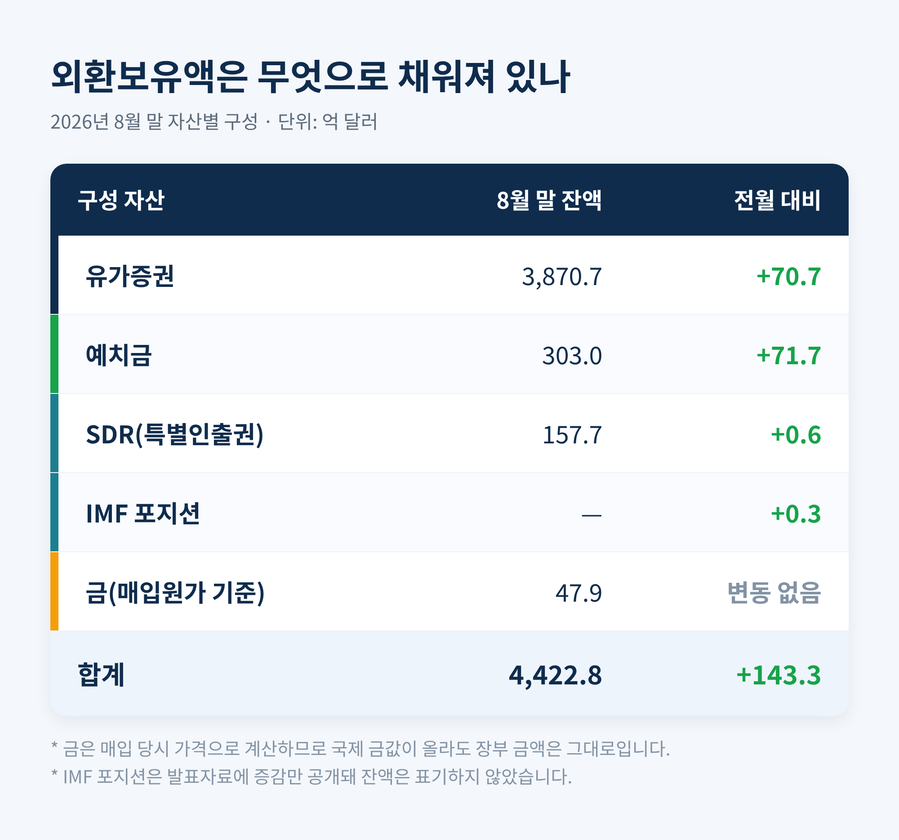
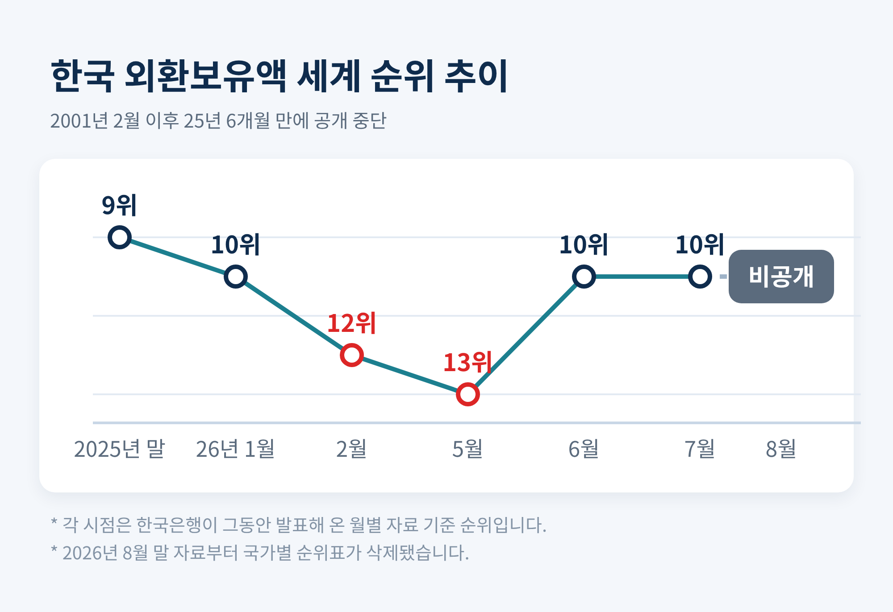
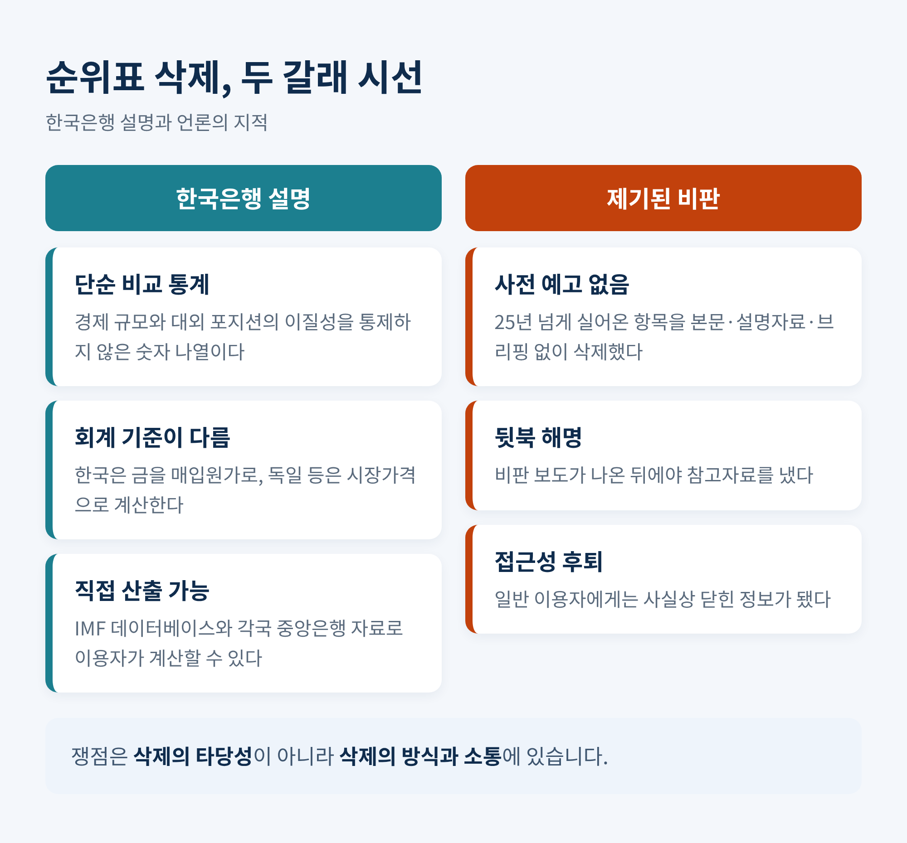

2026년 8월 말 4,422.8억 달러 · 월간 증가폭 역대 최대

이번 글에서는 2026년 9월 3일 한국은행이 발표한 8월 말 외환보유액 통계를 정리해 보겠습니다. 한 달 새 143억 달러가 늘어 월간 증가폭 기록을 새로 썼고, 같은 날 한은은 25년 넘게 실어온 세계 순위표를 자료에서 빼버렸습니다. 숫자와 침묵을 함께 읽어야 이번 발표의 의미가 보입니다.
한국은행이 3일 발표한 2026년 8월 말 외환보유액은 4,422억 8,000만 달러입니다. 7월 말 4,279억 5,000만 달러에서 143억 3,000만 달러가 늘었습니다.
월간 증가폭으로는 역대 최대입니다. 종전 기록은 글로벌 금융위기 직후였던 2009년 5월의 142억 9,000만 달러였습니다. 17년 만에, 그것도 4,000만 달러 차이로 아슬아슬하게 넘어섰습니다.
외환보유액은 6월부터 8월까지 석 달 연속 늘었습니다. 다만 사상 최대 잔액이었던 2021년 10월의 4,692억 1,000만 달러에는 아직 미치지 못합니다.

올해 흐름은 롤러코스터에 가까웠습니다. 1월 21억 5,000만 달러 감소, 2월 17억 2,000만 달러 증가, 3월 39억 7,000만 달러 급감, 4월 42억 2,000만 달러 증가, 5월 8억 8,000만 달러 감소. 상반기 내내 오르내리다 하반기 들어 방향을 틀었습니다.
지난해 말 4,280억 5,000만 달러였던 보유액은 8개월 만에 142억 3,000만 달러 불었습니다. 사실상 올해 늘어난 몫 전부가 8월 한 달에 몰린 셈입니다.

한은은 증가 원인으로 세 가지를 들었습니다. 금융기관의 외화예수금이 크게 늘었고, 운용수익이 붙었으며, 기타통화 외화자산의 미달러 환산액이 증가했다는 설명입니다.
이 중 압도적인 비중은 첫 번째입니다. 외화예수금은 은행 등 금융회사가 받은 외화 예금 가운데 한국은행에 지급준비금으로 맡긴 돈을 뜻합니다. 한은은 올해 외화예금 초과 지급준비금에 이자를 지급하는 제도를 운용하고 있고, 지난 6월 이를 6개월 연장했습니다. 이자가 붙으니 은행들이 남아도는 달러를 한은에 밀어 넣은 것입니다.
한은 관계자의 설명은 간명합니다. "금융기관의 외화자금 유동성이 워낙 풍부해 지급준비금으로 많이 넘어온 것으로 보고 있다"는 것입니다.
그렇다면 그 유동성은 어디서 왔을까요. 답은 반도체입니다.
산업통상자원부가 9월 1일 발표한 8월 수출은 982억 5,000만 달러로 1년 전보다 68.7% 늘었습니다. 그중 반도체가 467억 달러, 증가율은 무려 209%입니다. 15개월 연속으로 해당 월 역대 최대치를 갈아치웠습니다. 무역수지는 347억 5,000만 달러 흑자로 석 달 연속 300억 달러를 넘겼습니다.
수출로 벌어들인 달러가 국내 은행에 쌓이고, 그 달러가 다시 한국은행 계정으로 옮겨 앉은 구조입니다. 외환보유액 급증은 결국 반도체 슈퍼사이클의 그림자인 셈입니다.
환율도 거들었습니다. 8월 28일 원·달러 환율은 1,372.5원으로 약 13개월 만의 최저 수준을 기록했고, 9월 3일에는 1,360원대까지 내려가 연저점을 다시 썼습니다. 달러가 약해지면 유로나 엔으로 들고 있던 자산의 달러 환산액이 커집니다. 가만히 있어도 숫자가 불어나는 효과입니다.
여기서 한 번 멈춰 서야 합니다. 143억 달러 중 상당 부분은 금융기관이 맡긴 돈입니다. 나라가 벌어서 쌓아둔 순수한 국부와는 성격이 다릅니다. 은행이 찾아가겠다고 하면 돌려줘야 하는 자금입니다.
자산 구성을 보면 성격이 더 분명해집니다. 국채와 회사채 등 유가증권은 3,870억 7,000만 달러로 70억 7,000만 달러 늘었습니다. 예치금은 303억 달러로 71억 7,000만 달러 증가했습니다. 예치금 증가폭이 유가증권을 앞질렀다는 점이 이번 달의 특징입니다.
특별인출권(SDR)은 157억 7,000만 달러로 6,000만 달러, IMF 포지션은 3,000만 달러 늘었습니다. 금은 47억 9,000만 달러 그대로입니다.

금이 미동도 하지 않은 데는 이유가 있습니다. 한은은 금을 매입 당시 가격으로 장부에 적습니다. 국제 금값이 아무리 뛰어도 숫자는 그대로입니다. 참고로 한은은 2026년 8월 초, 2013년 2월을 끝으로 중단했던 금 매입을 13년 만에 재개하겠다고 밝혔습니다. LS MnM 같은 국내 제련업체가 수출하려던 물량을 원화로 사들여 국내에 보관하는 방식입니다. 다만 8월 중 실제 매입은 없었습니다.
같은 날 또 하나의 일이 있었습니다. 한은이 배포한 '8월 말 외환보유액' 자료에서, 늘 말미에 붙어 있던 '주요국의 외환보유액' 순위표가 통째로 빠진 것입니다.
한은이 월별 자료에 우리나라 세계 순위를 넣지 않은 것은 2001년 2월 말 이후 25년 6개월 만입니다. 이 항목은 1997년 외환위기를 겪은 뒤 국제 비교에 관심이 쏠리면서 자료에 들어간 것이었습니다. 시대의 산물이 조용히 퇴장한 셈입니다.
문제는 방식이었습니다. 본문에도, 별도 설명자료에도, 사전 브리핑에도 삭제 사실을 알리지 않았습니다.
최근 순위 흐름을 보면 왜 시선이 쏠렸는지 짐작이 갑니다. 지난해 말까지 9위였던 한국의 외환보유액 순위는 올해 1월 10위, 2월 12위로 밀리며 처음 10위권 밖으로 나갔습니다. 5월 말에는 13위까지 떨어졌다가, 6월 말 다시 10위로 세 계단 올라섰고 7월 말에도 10위를 지켰습니다.

비판 보도가 이어지자 한은은 그날 오전 '외환보유액 순위 관련 입장'이라는 참고자료를 냈습니다.
한은 국제국의 설명은 이렇습니다. 외환보유액 국가별 순위는 경제 규모나 대외포지션의 이질성을 전혀 통제하지 않은 단순 비교 통계이며, 외화유동성 경색 같은 충격에 대한 완충재 역할을 유추할 수 없어 "분석적 가치가 미미하다"는 것입니다. 금값 변동이나 다른 나라의 시장개입 기조에 따라 우리 건전성과 무관하게 순위가 오르내리며 엉뚱한 해석을 낳아왔다는 설명도 덧붙였습니다.
이 논리 자체는 설득력이 있습니다. 앞서 봤듯 한국은 금을 매입원가로 계산하지만 독일 등은 시장가격으로 잡습니다. 금값이 오르면 한국 순위만 저절로 밀립니다. 애초에 같은 잣대가 아닌 것을 줄 세워온 셈입니다.
한은은 "필요하면 IMF 데이터베이스와 개별 중앙은행 홈페이지에서 직접 산출해 볼 수 있다"며 "외환당국에 불리한 정보를 숨길 목적이라는 것은 사실이 아니다"라고 못 박았습니다.
그럼에도 남는 문제가 있습니다.
첫째, 순서가 뒤바뀌었습니다. 바꿀 명분이 있었다면 개편 시점에 취지를 먼저 알렸으면 될 일입니다. 조용히 뺐다가 지적이 나오자 반박 자료를 내는 모양새는 다릅니다. 이데일리 장영은 기자는 이를 두고 "한은의 신뢰도를 스스로 갉아먹는 자책골에 가깝다"고 짚었습니다.
둘째, 시점이 공교롭습니다. 순위가 13위까지 밀렸던 해에 순위표를 없앴고, 하필 보유액이 역대급으로 급증한 날 그렇게 했습니다. 의도가 없었더라도 오해를 사기 좋은 배치입니다.
셋째, 접근성은 분명히 후퇴했습니다. 이제 순위를 알려면 IMF 자료와 각국 중앙은행 통계를 일일이 찾아 가공해야 합니다. 전문가에게는 번거로운 일이고, 일반 국민에게는 사실상 닫힌 문입니다.

그렇다면 지금 규모는 안전한 수준일까요. 여기서 오래된 논쟁이 다시 등장합니다.
IMF의 외환보유액 적정성 평가지수(ARA)는 단기외채와 통화량, 수출액 등을 종합해 나라별 적정 수준을 산출합니다. 통상 100~150%를 권고합니다. 한국은 2020년 98.9%, 2021년 99%, 2022년 97.0%로 3년 연속 하단인 100%를 밑돌았습니다. IMF는 2023년 7월부터 한국에는 신흥국용 ARA 대신 선진국과 같은 스트레스 테스트 방식의 정성평가를 적용하고 있습니다.
또 다른 잣대인 기도티-그린스펀 룰은 "1년 안에 갚아야 할 단기외채 전액을 외환보유액으로 감당할 수 있어야 한다"고 봅니다. 이 기준을 한국에 적용하면 적정 규모가 4,500억 달러 안팎이라는 분석이 있습니다. 반면 종전 IMF 권고 기준으로는 1,500억 달러 내외면 된다는 추정도 있습니다.
기준이 다르면 결론도 갈립니다. 4,422억 8,000만 달러는 기도티 룰 기준으로는 아직 조금 모자라고, 다른 기준으로는 넉넉합니다. "충분하다"와 "부족하다"가 동시에 참인 이상한 숫자입니다.
29년 전을 떠올리면 감각이 조금 달라집니다. 1997년 11월 26일 공식 외환보유액은 242억 달러였지만 연내 쓸 수 있는 돈은 92억 달러뿐이었습니다. 12월 18일에는 가용 외환보유액이 39억 4,000만 달러까지 내려갔습니다. 그해 12월 19일 IMF에서 35억 달러가 들어오고 나서야 75억 달러가 됐습니다. 1998년 말 520억 달러, 2001년 말 1,028억 달러로 회복하기까지 몇 해가 걸렸습니다.
세계 순위표가 한은 자료에 처음 실린 해가 바로 2001년입니다. 그 표는 통계이기 이전에 다짐이었습니다.
세 가지를 보시길 권합니다.
먼저 외화예수금의 지속성입니다. 이번 증가의 주역은 은행이 맡긴 돈입니다. 초과 지급준비금 이자 지급이 6개월 연장된 상태이므로, 제도가 종료되거나 은행의 외화 유동성이 줄면 숫자는 되돌아갈 수 있습니다.
다음은 환율의 방향입니다. 예전에는 치솟는 환율을 막느라 보유액을 헐어 썼고, 지금은 넘치는 달러를 쌓고 있습니다. 정부가 2026년 예산에 적용한 환율은 1,490원인데 실제로는 1,360원대까지 내려왔습니다. 원화 강세는 세수에는 부담이고 수출기업에는 압박입니다. 반도체 호황이 꺾이는 순간 이 흐름은 다시 뒤집힐 수 있습니다.
마지막은 대외 변수입니다. 향후 10년에 걸친 3,500억 달러 규모의 대미 투자가 구조적인 원화 약세 압력으로 작용할 수 있다는 지적이 나옵니다. 정부가 그 선결조건으로 미국과의 무제한 통화스와프를 요구했으나 미국이 거부했다는 보도도 있습니다. 아직 공식 확인된 사안은 아니므로 단정하기는 이릅니다.
정리하면 이렇습니다. 8월의 143억 달러는 분명 반가운 숫자입니다. 그러나 성격을 뜯어보면 은행이 맡긴 돈이 큰 몫을 차지하고, 규모가 충분한지에 대해서는 여전히 답이 갈립니다. 좋은 소식인 것은 맞되, 안심의 근거로 삼기에는 아직 이릅니다.
그리고 같은 날 사라진 순위표가 남긴 질문은 통계의 정확성이 아니라 태도에 관한 것이었습니다. 지표를 바꿀 수는 있습니다. 다만 왜 바꾸는지를 먼저 말했어야 합니다.
— 중앙은행의 신뢰는 숫자가 아니라 설명에서 만들어집니다.
25년 동안 실려 있던 표 하나가 사라진 날, 우리가 정말로 잃은 것이 무엇인지 물으신다면, 저는 순위가 아니라 예고였다고 답하겠습니다.
이 글은 공개된 통계와 언론 보도를 정리한 정보 제공 목적의 글이며, 특정 자산에 대한 투자 권유나 투자 자문이 아닙니다. 환율과 외환 관련 지표는 수시로 변동하므로, 투자 판단과 그 결과에 대한 책임은 투자자 본인에게 있습니다.